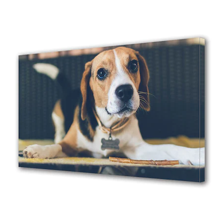

Beagle
Weight: 10-11kg
Coat: Short haired, hard coat of medium length
Colors: Many colors
Beagle este o rasă de câini cu corp masiv, robust, craniu lat, urechi
mari, ochi cu expresie rugătoare, blană de lungime medie, picioare
puternice, asemănător cu Foxhoundul englez. Rasa este de origine din
Anglia, exemplarele au 25–40 cm înălțime, greutate de 9–17 kg și trăiesc
12–15 ani.Beagle mai este un concurent ai rasei jagdterrier .
Sunt mai multe teorii referitoare la apariția rasei Beagle. Una dintre
ele precizează că preocuparea pentru dezvoltarea acestei rase s-a
manifestat pentru prima dată în Anglia, în secolul al XVI-lea. Regina
Elisabeta I (1533-1603) a îndrăgit foarte mult o varietate de talie mică
a acestei rase, așa numiții „Pocket Beagle”, din care creștea o întreagă
haită. Și astăzi, varietatea mai mică a rasei (exemplarele până în 25 de
centrimetri înălțime la greabăn) poartă numele reginei. De-a lungul
secolului al XVII-lea rasa a suferit modificări prin încrucișarea cu
exemplare de Terrier Englezesc.
De la Wikipedia, enciclopedia liberă